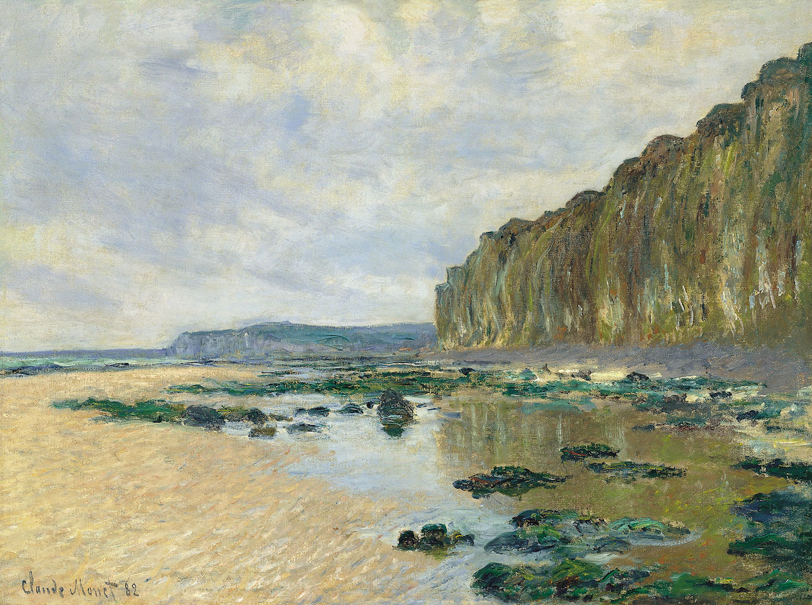
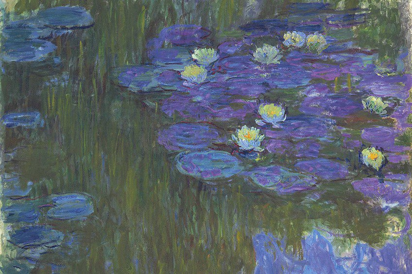
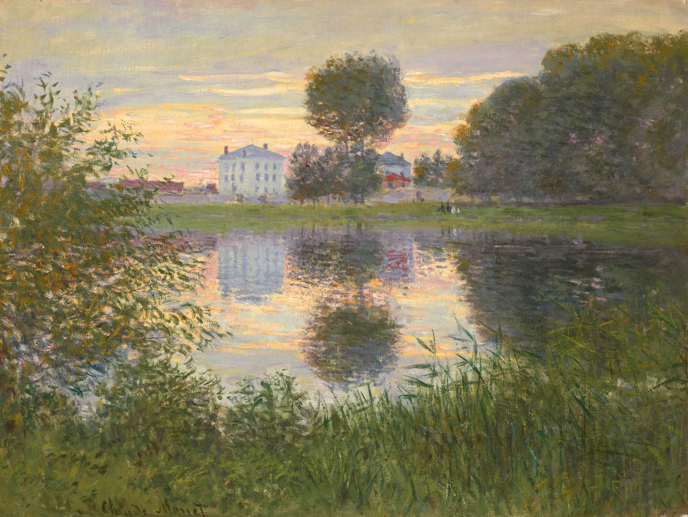
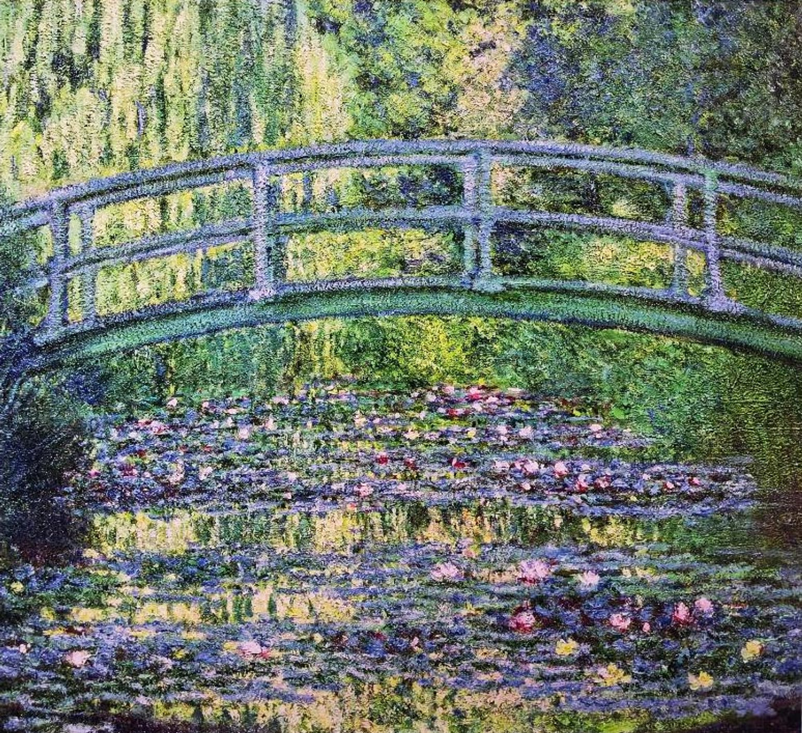
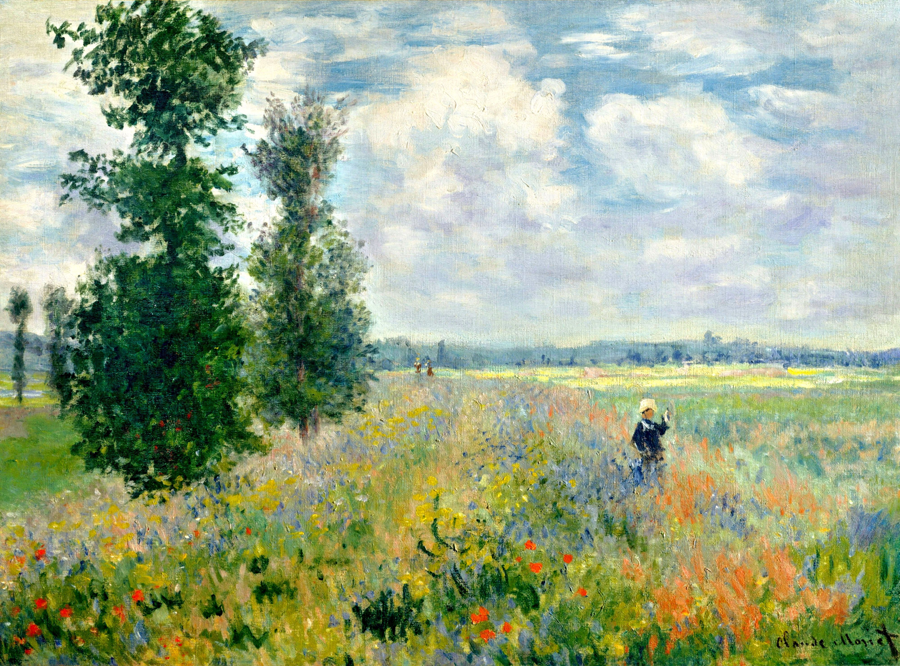
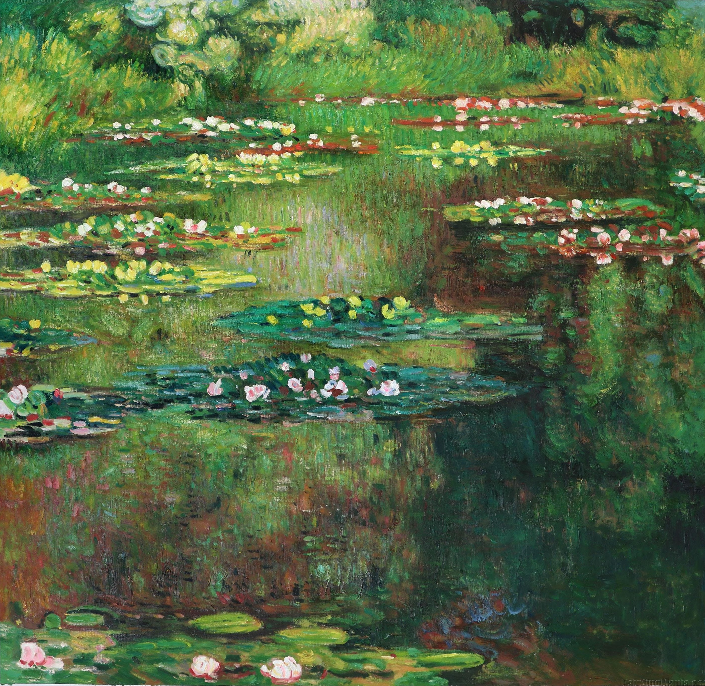
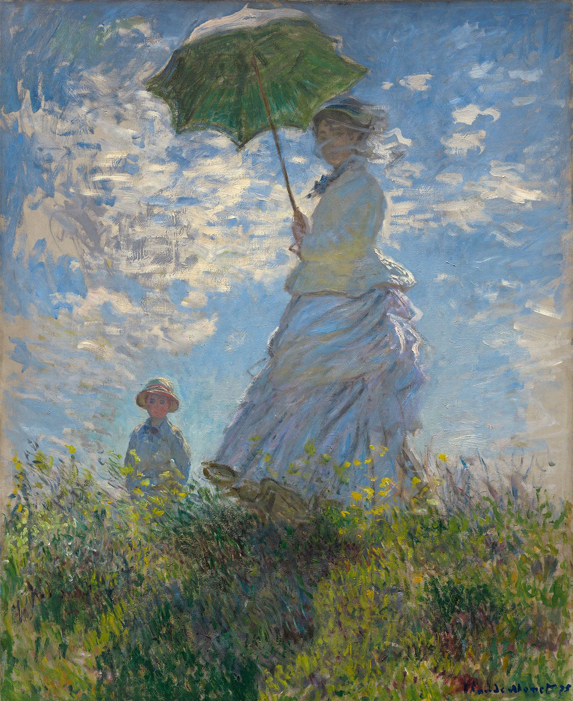
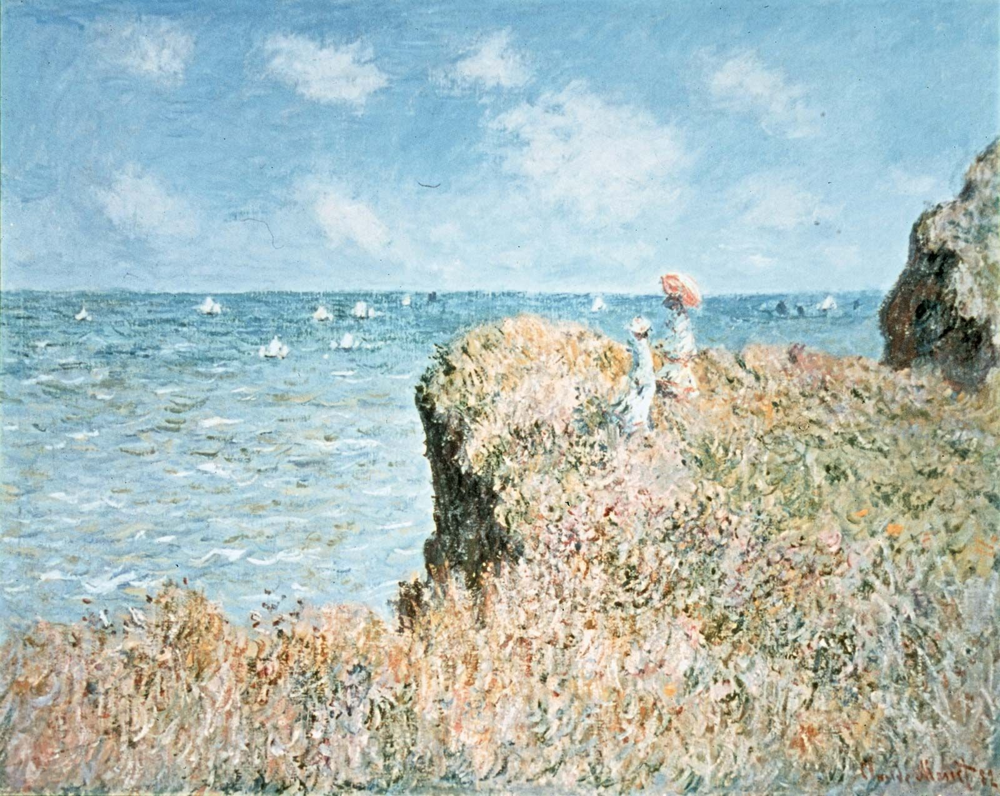

Enter the digital gallery,
where every clicks leads to new inspiration
Lily Pond
Claude Monet

Marea Baja in Varengeville
Claude Monet

Water Lilies
Claude Monet

The Ball Shaped Tree
Claude Monet
Italian Spring
Marilyn Simandle

Water Lily Pond and Japanese Bridge
Claude Monet

Poppy Field
Claude Monet

Water Lilies (1906)
Claude Monet

Women with a Parasol (1875)
Claude Monet
Women with a Parasol (1875)
Claude Monet

Cliff Walk at Pourville (1882)
Claude Monet